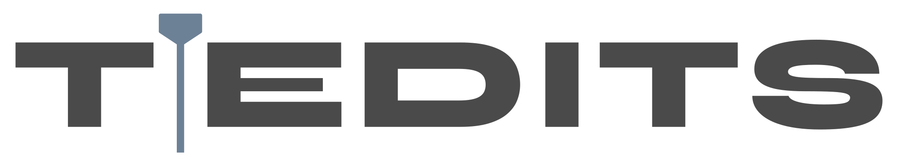
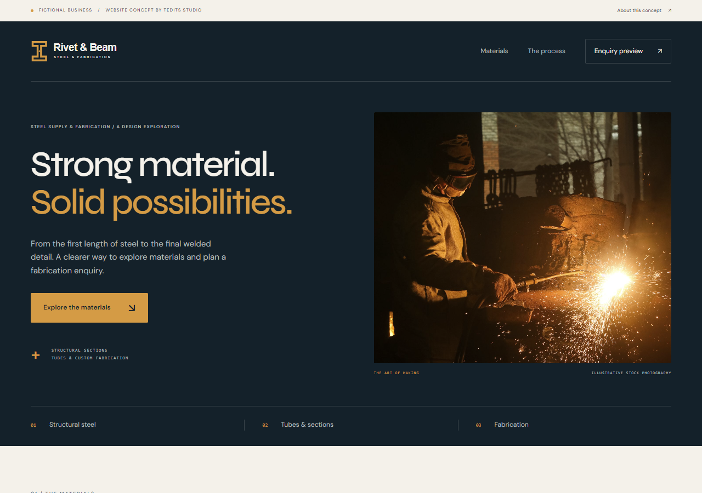

People need a clear first impression
Show what you do, who it is for, and why someone should get in touch—without making visitors work it out for themselves.

STUDIOSomeone is looking for
When they reach your website, it should make your work easy to understand and make contacting you feel effortless. I build sites that do both, with a look that belongs to your business.
FOR MAKERS, SERVICE BUSINESSES, SCHOOLS, ORGANISATIONS & MORE
02 / THE MISSED OPPORTUNITY
Your work deserves a better introduction than a dated page, a social profile, or no site at all.
Show what you do, who it is for, and why someone should get in touch—without making visitors work it out for themselves.
Bring projects, services, menus, products, or programmes together in a place you own and can point people to.
A phone number hidden in a caption or an old inbox can cost you a conversation. Give visitors a direct way to reach you.
A generic template can miss the personality of a good business. Colour, type, imagery, and structure can tell a more honest story.

Every project starts with the business—not a preset look.
03 / WHAT YOU GET
Search visibility depends on many factors, so I won’t promise a particular Google ranking.
04 / WHY WORK WITH ME
I’m a one-person studio. Your questions and ideas come directly to me, and I’m the one shaping the design and building the site.
For a standard business site, I aim to have it ready in 3–5 days once I have what I need. Larger transactional sites or complex data projects take longer.
3 rounds of revisions are included, so we can refine the details before launch. Later updates are available as paid work.
I’m as excited as you are to get your business online. I care about making the site useful, distinctive, and ready for real conversations.
05 / HOW WE GET THERE
Tell me about the business, who you serve, and what the website needs to do. Photos, copy, and examples help me get started.
I shape a direction around your brand, then build a responsive site with the right pages and contact routes.
You review it, we use the included revisions, and the site goes live when you are happy with it.
06 / THE STARTING POINT
Basic one- or two-page business websites start at £200. If your site needs more pages, transactions, complex content, or integrations, I’ll give you a tailored quote.
Hosting depends on the type of website. Ongoing support is a separate monthly charge, and updates after the 3 included revision rounds are paid.
Tell me what you needFROM£200Basic 1–2 page business site
INCLUDED3Revision rounds before launch
TIMELINE3–5 daysTypical aim for a standard site after I receive the essentials
07 / READY WHEN YOU ARE